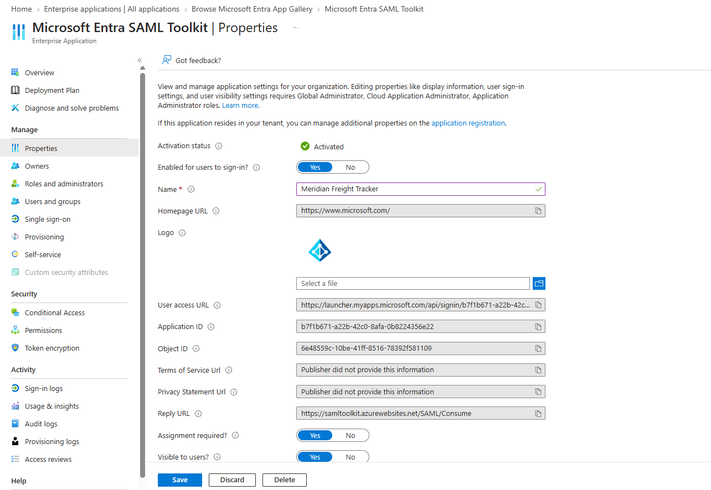
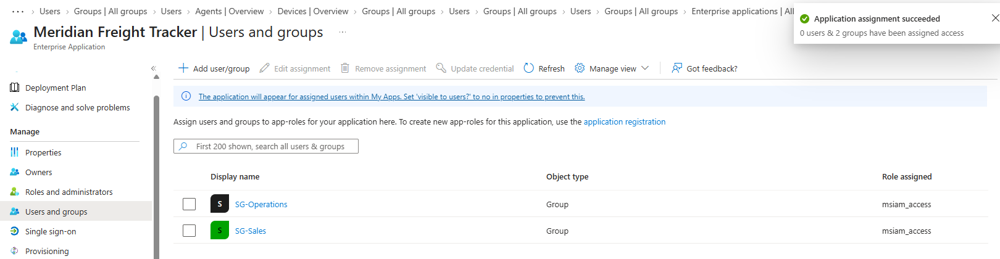
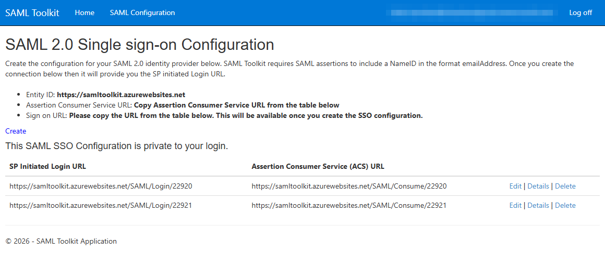
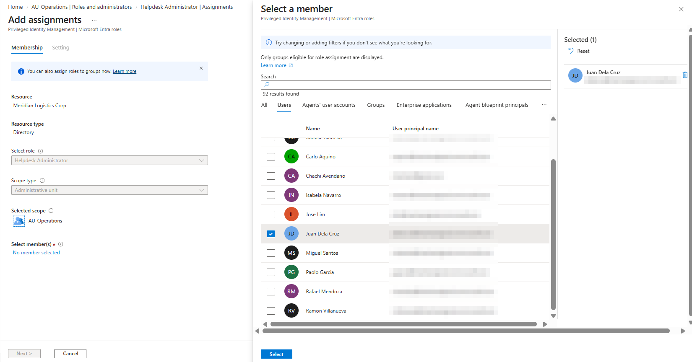

Microsoft Entra ID IAM Lab
Designed and tested identity and access management for Meridian Logistics Corp, a simulated 150-employee freight company. Dynamic groups, scoped admin roles, SAML SSO, Conditional Access MFA, and a scripted Joiner-Mover-Leaver lifecycle, each validated through the logs.
Lab report
LAB-2026-1119Build timeline
- 01Harden the tenantSecurity defaults replaced with Conditional Access
- 02Group by departmentFive dynamic groups with rules on user.department
- 03Grant through groupsLicensing, SAML SSO and scoped admin roles
- 04Enforce sign-in policyThree policies, report-only first, then on
- 05Run the lifecycleJoiner, mover and leaver, all by script
- 06Prove it in the logs132 interactive and 1,547 non-interactive sign-ins reviewed
Tools used
Architecture
One attribute drives access. A user's department places them in a dynamic security group, and the group carries their licence and app access. Conditional Access sits in front of every sign-in, and the logs record the result.
# access flow JML scripts (Graph PowerShell + CSV) └─ Users (10 base + 2 scripted joiners) └─ user.department → SG-IT · SG-Finance · SG-HR · SG-Operations · SG-Sales ├─ Group-based licensing (M365 E5, incl. Entra ID P2) ├─ Meridian Freight Tracker (SAML SSO) ← SG-Operations, SG-Sales └─ Scoped roles (Helpdesk Admin on AU-Operations, Security Reader) └─ Conditional Access: CA001 MFA · CA002 block legacy · CA003 admin MFA └─ Sign-in and audit logs
What I built
| Control | Business reason | Implementation |
|---|---|---|
| Dynamic groups | Access follows the HR record | Five department groups on user.department |
| Group-based licensing | New staff get software without a ticket | M365 E5 assigned to groups, usage location set |
| Scoped admin roles | Helpdesk resets passwords for one team only | Helpdesk Admin on an Administrative Unit; Security Reader for audit |
| SAML SSO | One sign-in for the freight app | Gallery SAML app, assignment required, two groups |
| Conditional Access | MFA everywhere, no legacy protocols | Three policies, report-only then on; break-glass excluded |
| Access-block test | Prove a policy can stop access | Temporary block on one user and app (53003), then removed |
| Joiner-Mover-Leaver | Accounts change with the job | CSV-driven Graph PowerShell for each stage |




Joiner-Mover-Leaver lifecycle
Joiner. A CSV and a PowerShell script created two users with department, job title and a forced-change temporary password. Licences arrived through group membership about a minute later, with no manual step.
Mover. One command changed a user's department from Sales to Finance. Group membership, licence and app access followed within seconds.
Leaver. The account was disabled, all sessions revoked, and the department set to "Former Employee". A later sign-in failed with error 50057.
Log review findings
I exported 132 interactive and 1,547 non-interactive sign-ins plus the audit log, and checked what each control actually did.
- CA onPolicies took effect the moment they switched from report-only to on.
- 50074Users without MFA were forced to register, then signed in.
- 53003The targeted block worked and was reversible.
- 10 failsNo brute-force pattern: four users, never more than four in a row, no lockouts.
- 50057The leaver was locked out about an hour after offboarding.
- 50105App assignment was enforced for users outside the assigned groups.
Challenges and fixes
| Issue | Cause | Fix |
|---|---|---|
| Graph PowerShell blocked (530035) | Security defaults still on | Replaced with Conditional Access |
| Consent error (65001) | No admin consent for the Graph app | Granted tenant consent |
| Device-code login failed | Windows PowerShell 5.1 limit | Moved to PowerShell 7 |
| SAML certificate greyed out | Required SAML fields empty | Saved placeholders, then real values |
| Licence assignment missing in Entra | Group licensing lives in the M365 admin center | Assigned there after setting usage location |